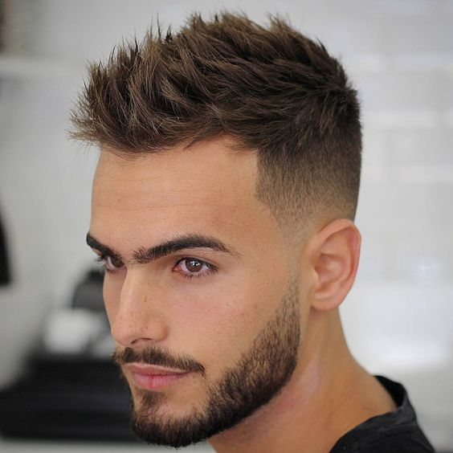
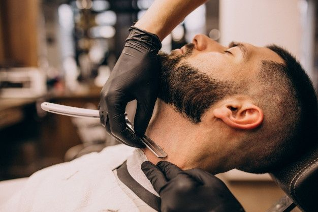
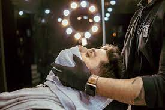
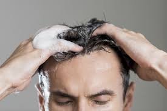
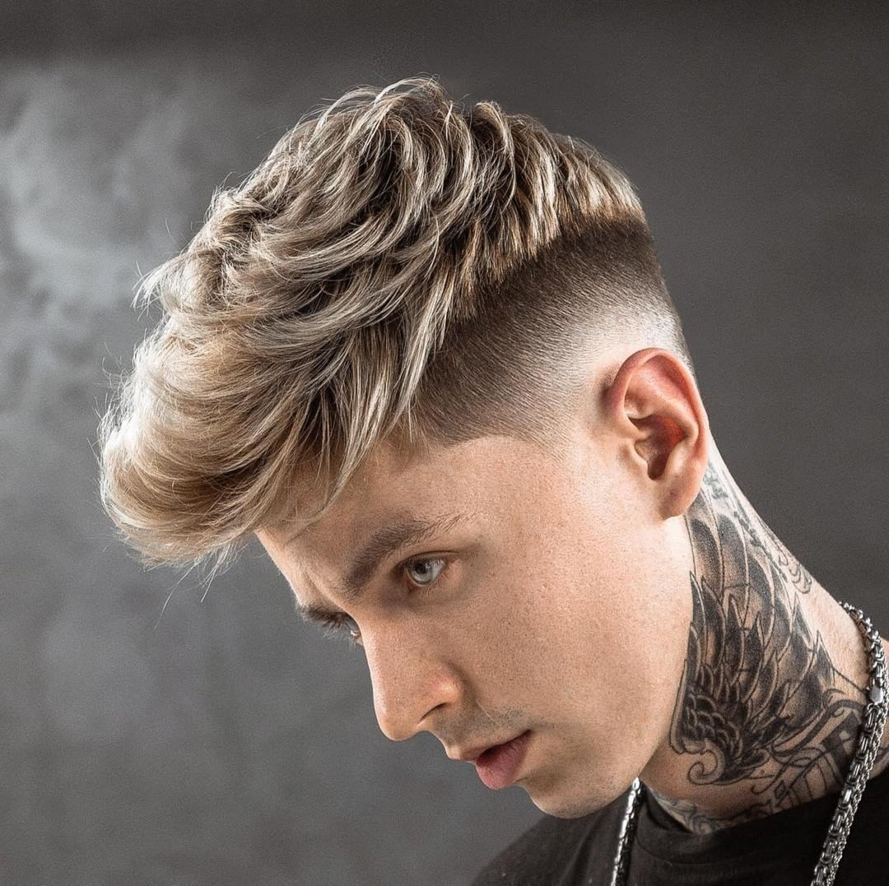
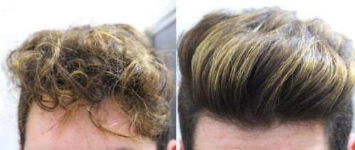
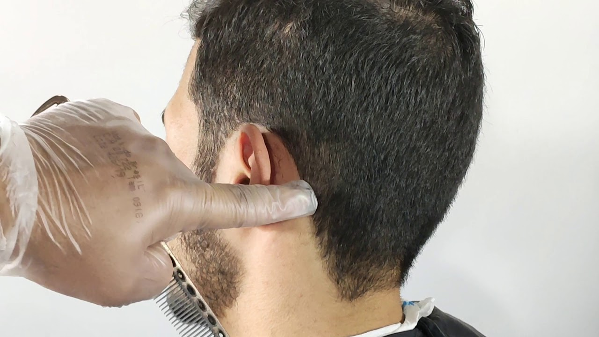
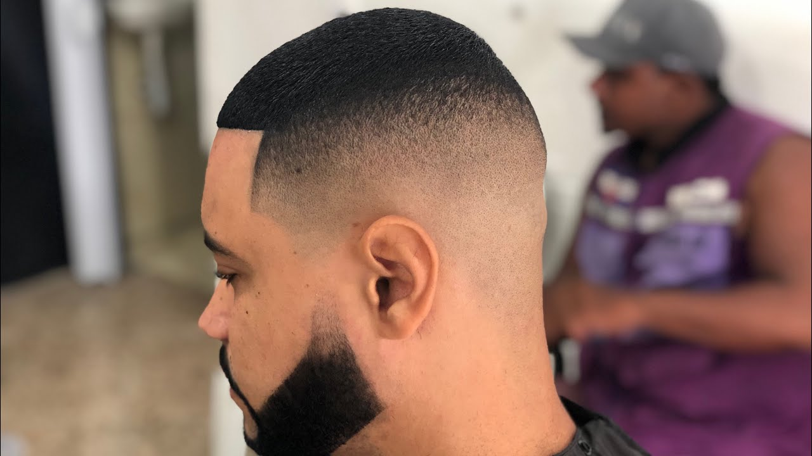

CORTE NA TESOURA
É aqui que geralmente os homens optam por fazerem um corte social clássico, usando somente a tesoura.

É aqui que geralmente os homens optam por undercuts (laterais da cabeça e nuca raspadas e topo mais volumoso), cortes militares (topo e laterais ficam com pouco volume, sendo as laterais um pouco mais curtas), e fades (degradê de comprimento nas laterais e na nuca).
É aqui que geralmente os homens optam por fazerem um corte social clássico, usando somente a tesoura.
Aqui é onde o cliente cuida dos pelos faciais. Existem variados tipo de barbas, que seja da escolha do cliente.
É um procedimento que tem como objetivo promover o relaxamento, além de prezar pela hidratação da pele e, claro, uma barba bem feita.
A hidratação capilar é responsável por repor a água e os nutrientes que os fios perdem diariamente. Com a exposição ao sol e frio, uso de secador e chapinha, além de química no cabelo, deixam os fios ressecados e opacos.
Luzes são mechas finas e espalhadas pelo cabelo, elas são feitas em mechas bem finas, puxadas da raiz até às pontas, proporcionando um efeito super natural. A coloração é feita com alguns tons mais claros, que se espalham por todo o cabelo.
O cabelo platinado consiste nos fios descoloridos em um tom bem claro, quase branco, ou como o nome mesmo indica em uma nuance na cor platina. Contudo, a tonalidade também pode variar entre a cor champanhe e cinza. Ele é uma tendência atemporal, muito pedida desde o tempo das grandes divas pop até hoje.

O relaxamento capilar é um tipo de técnica de alisamento para cabelos cacheados e crespos, muito indicado para mulheres que desejam diminuir o volume e dar um alisamento mais suave para os fios, tirar o peso e deixar os cachos mais abertos.
A sobrancelha masculina normalmente, não é desenhada como as femininas. Os homens tiram apenas o excesso.

É popularmente conhecido como pezinho, onde serve para demarcar a finalização do cabelo masculino.
A Máscara Preta Avenca é indicada para todo tipo de pele, mas é ideal para peles oleosas, agindo como removedora de cravos. Sua fórmula com Argila Preta, possui ação desintoxicante que reduz a oleosidade e ajuda no combate ao aparecimento de acnes (cravos e espinhas).

O método de Pigmentação da Barba consiste em aplicar uma tinta na camada mais superficial da pele para obter uma sombra, que irá se misturar aos pelos da barba deixando a barba falhada e rala passar despercebida podendo ser feita nas costeletas e cavanhaque e em qualquer tamanho de falha

O método de Pigmentação da Capilar consiste em aplicar uma tinta na camada mais superficial da pele para obter uma sombra. Ela camufla o couro cabeludo conseguindo assim eliminar falhas, aumentar a densidade dos fios, diminuir a aparência do couro cabeludo, camuflar cicatrizes de homens e mulheres.

Na nossa Barbearia a aplicação de tinta, consiste no cliente trazer sua própria tinta para que possamos usá-la da forma de sua preferencia.
